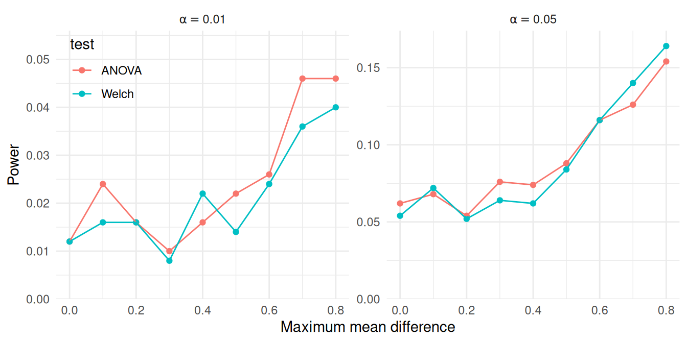

Chapter 10 Simulating across multiple scenarios
In Chapter 4, we described the general structure of basic simulations as following four steps: generate, analyze, repeat, and summarize. The principles of tidy simulation suggest that each of these steps should be represented by its own function or set of code. For any particular simulation we have a data-generating function and a data-analysis function, which can be bundled together into a simulation driver that repeatedly executes the generate-and-analyze process; we also have a summarization function (or set of code) that computes performance measures across the replications of the simulation process. In the previous section of the book, we focused on creating code that will run a simulation for a single scenario, going from a set of parameter values to a set of performance measures.
In practice, simulation studies often involve examining a range of different values, such as multiple levels of a focal parameter value and potentially also multiple levels for auxiliary parameters, sample size, and other design parameters. In this chapter, we demonstrate an approach for executing simulations across multiple scenarios and organizing the results for further analysis. Our focus here is on the programming techniques and computational structure. In the next chapter, we discuss some of the deeper theoretical challenges of designing multifactor simulations. Then in subsequent chapters, we examine tools for analyzing and making sense of results from more complex, multifactor simulation designs.
In Chapter 4, we described three further steps involved in systematic simulations: designing a set of scenarios to examine, executing across multiple scenarios, and synthesizing the performance results across scenarios. The same principles of tidy simulation apply to these steps as well. In this chapter, we will demonstrate how to create a dataset representing the experimental design of the simulation, how to execute a simulation driver across multiple scenarios, and how to organize results for synthesis.
10.1 Simulating across levels of a single factor
Even if we are only using simulation in an ad hoc, exploratory way, we will often be interested in examining the performance of a model or estimation method in more than one scenario. We have already seen examples of this in Chapter 3, where we looked at the coverage rate of a confidence interval for the mean of an exponential distribution. In Section 3.3, we applied a simulation driver function across a set of sample sizes ranging from 10 to 300, finding that the coverage rate improves towards the desired level as sample size increases. Simple forms of systematic exploration such as this are useful in many situations. For instance, when using Monte Carlo simulation for study planning, we might examine simulated power over a range of the target parameter to identify the smallest parameter for power is above a desired level. If we are using simulation simply to study an unfamiliar model, we might vary a key parameter over a wide range to see how the performance of an estimator changes. These forms of exploration can be understood as single-factor simulations.
To demonstrate a single-factor simulation, we revisit the case study on heteroskedastic analysis of variance, as studied by @brown1974SmallSampleBehavior and developed in Chapter 5.
Suppose that we want to understand how the power of Welch’s test varies as a function of the maximum distance between group means.
The data-generating function generate_ANOVA_data() that we developed previously was set up to take a vector of means per group, so we re-parameterize the function to define the group means based on the maximum difference (max_diff), under the assumption that the means are equally spaced between zero and the maximum difference.
We will also re-parameterize the function in terms of the total sample size and the fraction of observations allocated to each group.
The revised function is
generate_ANOVA_new <- function(
G, max_diff, sigma_sq = 1, N = 20, allocation = "equal"
) {
mu <- seq(0, max_diff, length.out = G)
if (identical(allocation, "equal")) {
allocation <- rep(1 / G, times = G)
} else {
allocation <- rep(allocation, length.out = G)
}
N_g <- round(N * allocation)
group <- factor(rep(1:G, times = N_g))
mu_long <- rep(mu, times = N_g)
sigma_long <- rep(rep(sqrt(sigma_sq), length.out = G), times = N_g)
x <- rnorm(N, mean = mu_long, sd = sigma_long)
sim_data <- tibble(group = group, x = x)
return(sim_data)
}Now we can create a simulation driver by combining this new data-generating function with the data-analysis function we created in Section 5.2:
To compute power, we generate a set of simulated \(p\) values and then summarize the rejection rate of the Welch test at \(\alpha\) levels of .01 and .05:
sim_ANOVA(100, G = 4, max_diff = 0.5, sigma_sq = c(1, 2, 2, 3), N = 40) |>
calc_rejection(p_values = Welch, alpha = c(.01, .05))## K_rejection rej_rate_01 rej_rate_05
## 1 100 0.06 0.08
## rej_rate_mcse_01 rej_rate_mcse_05
## 1 0.02374868 0.02712932Now we can apply this process for several different scenarios with different values of mu1.
Following the principles of tidy simulation, it is useful to represent the design of a systematic simulation as a dataset with a row for each scenario to be considered. For a single-factor simulation, the experimental design consists of a dataset with just a single variable:
## tibble [9 × 1] (S3: tbl_df/tbl/data.frame)
## $ max_diff: num [1:9] 0 0.1 0.2 0.3 0.4 0.5 0.6 0.7 0.8To compute simulation results for each of these scenarios, we can use the map() function from purrr().
This function takes a list of values as the input, then calls a function on each value.
Our sim_ANOVA() function has several further arguments that need to be specified.
Because these will be the same for every value of max_diff, we can include them as additional arguments in map(), and they will be used every time sim_ANOVA() is called.
Here is one way to code this:
Welch_results <-
Welch_design %>%
mutate(
pvals = map(max_diff, sim_ANOVA, reps = 100, G = 4,
sigma_sq = c(1, 2, 2, 3), N = 40)
)Another way to accomplish the same thing is to specify an anonymous function (also called a lambda) in the map() call.
This syntax makes it clearer that the additional arguments are getting called in every evaluation of sim_ANOVA():
Welch_results <-
Welch_design %>%
mutate(
pvals = map(max_diff, ~ sim_ANOVA(100, G = 4, max_diff = .x,
sigma_sq = c(1, 2, 2, 3),
N = 40))
)In the resulting dataset, the pvals variable is a list, with each entry consisting of a tibble of simulated p-values.
Using the unnest() function simplies the structure of the results, making it easier to do performance calculations:
The resulting dataset has 900 rows, consisting of 100 replications for each of 9 scenarios.
To compute power levels, we use calc_rejection() after grouping the results by scenario:
Welch_power <-
Welch_results_long %>%
group_by(max_diff) %>%
summarize(
calc_rejection(p_values = Welch, alpha = c(.01,.05))
)
Welch_power## # A tibble: 9 × 6
## max_diff K_rejection rej_rate_01 rej_rate_05
## <dbl> <int> <dbl> <dbl>
## 1 0 100 0.07 0.1
## 2 0.1 100 0.03 0.06
## 3 0.2 100 0.04 0.08
## 4 0.3 100 0.03 0.11
## 5 0.4 100 0.01 0.04
## 6 0.5 100 0.02 0.11
## 7 0.6 100 0.05 0.11
## 8 0.7 100 0.03 0.11
## 9 0.8 100 0.04 0.16
## # ℹ 2 more variables: rej_rate_mcse_01 <dbl>,
## # rej_rate_mcse_05 <dbl>The power levels are quite low, with the \(\alpha = .05\)-level tests reaching a maximum power of 0.16 when max_diff is 0.8.
The lower power levels max sense here because we are looking at a scenario with a very small sample size of just 10 observations per group.
10.1.1 A performance summary function
These performance calculations focus only on the results for the Welch test, when we might be interested in comparing Welch’s test to the conventional ANOVA \(F\).
One way to carry out the performance calculations for both measures is to write a small function that encapsulates the performance calculations, then use it in place of calc_rejection().
The function should take a set of simulation results as input and provide a dataset of performance measures as output.
Here is one possible implementation, which uses map() to apply the performance calculations to each set of simulated p-values:
summarize_power <- function(data, alpha = c(.01,.05)) {
ANOVA <- calc_rejection(data, p_values = ANOVA, alpha = alpha, format = "long")
Welch <- calc_rejection(data, p_values = Welch, alpha = alpha, format = "long")
bind_rows(
ANOVA = ANOVA,
Welch = Welch,
.id = "test"
)
}
power_levels <-
Welch_results %>%
mutate(
power = map(pvals, summarize_power, alpha = c(.01, .05))
) %>%
dplyr::select(-pvals) %>%
unnest(power)
power_levels## # A tibble: 36 × 6
## max_diff test K_rejection alpha rej_rate
## <dbl> <chr> <int> <dbl> <dbl>
## 1 0 ANOVA 100 0.01 0.04
## 2 0 ANOVA 100 0.05 0.08
## 3 0 Welch 100 0.01 0.07
## 4 0 Welch 100 0.05 0.1
## 5 0.1 ANOVA 100 0.01 0.03
## 6 0.1 ANOVA 100 0.05 0.11
## 7 0.1 Welch 100 0.01 0.03
## 8 0.1 Welch 100 0.05 0.06
## 9 0.2 ANOVA 100 0.01 0.03
## 10 0.2 ANOVA 100 0.05 0.1
## # ℹ 26 more rows
## # ℹ 1 more variable: rej_rate_mcse <dbl>10.1.2 Adding performance calculations to the simulation driver
Now that we have a function for carrying out the performance calculations, we could consider incorporating this step into the simulation driver function.
That way, we can call the simulation driver function with a set of parameter values and it will return a table of performance summaries.
The bundle_sim() function from simhelpers will create such a function for us, by combining a performance calculation function with the data-generating and data-analysis functions:
sim_ANOVA_full <- bundle_sim(
f_generate = generate_ANOVA_new,
f_analyze = ANOVA_Welch_F,
f_summarize = summarize_power
)
args(sim_ANOVA_full)## function (reps, G, max_diff, sigma_sq = 1, N = 20, allocation = "equal",
## alpha = c(0.01, 0.05), seed = NA_integer_, summarize = TRUE)
## NULLThe resulting function includes an input argument that controls which alpha levels to use in the rejection rate calculations.
The bundled simulation driver also includes an additional option called summarize, which allows the user to control whether to apply the performance calculation function to the simulation output.
The default value of TRUE means that calling the function will compute rejection rates:
sim_ANOVA_full(
reps = 100, G = 4, max_diff = 0.5,
sigma_sq = c(1, 2, 2, 3), N = 40,
alpha = c(.01, .05)
)## # A tibble: 4 × 5
## test K_rejection alpha rej_rate rej_rate_mcse
## <chr> <int> <dbl> <dbl> <dbl>
## 1 ANOVA 100 0.01 0.04 0.0196
## 2 ANOVA 100 0.05 0.11 0.0313
## 3 Welch 100 0.01 0.04 0.0196
## 4 Welch 100 0.05 0.12 0.0325Setting summarize = FALSE will produce a dataset with the raw simulation output, with one row per replication, ignoring the additional inputs related to the performance calculations:
sim_ANOVA_full(
reps = 4, G = 4, max_diff = 0.5,
sigma_sq = c(1, 2, 2, 3), N = 40,
summarize = FALSE
)## # A tibble: 4 × 2
## ANOVA Welch
## <dbl> <dbl>
## 1 0.515 0.525
## 2 0.155 0.148
## 3 0.917 0.941
## 4 0.439 0.286This more elaborate simulation driver makes execution of the simulations a bit more streamlined.
The full set of performance summaries can now be computed by calling map() with the full driver:
set.seed(20251031)
power_levels <-
Welch_design %>%
mutate(
res = map(max_diff, sim_ANOVA_full, reps = 500, G = 4,
sigma_sq = c(1, 2, 2, 3), N = 40,
alpha = c(.01, .05))
) %>%
unnest(res)The results are organized in a way that facilitates visualization of the power levels:
ggplot(power_levels) +
aes(max_diff, rej_rate, color = test) +
geom_point() + geom_line() +
scale_y_continuous(limits = c(0, NA), expand = expansion(0,c(0,0.01))) +
facet_wrap(~ alpha, scales = "free", labeller = label_bquote(alpha == .(alpha))) +
labs(x = "Maximum mean difference", y = "Power") +
theme_minimal() +
theme(legend.position ="inside", legend.position.inside = c(0.08,0.85))
Under the conditions examined here, both tests appear to have similar power.
At the .05 \(\alpha\) level, the power of the Welch test is nearly identical to that of the ANOVA \(F\) test.
At the .01 \(\alpha\) level, there may be a discrepancy at when max_diff is 0.8, but the apparent difference might be attributable to Monte Carlo error.
Although the tests appear to work similarly here, these results are based on a very specific set of conditions, including equally sized groups and a specific configuration of within-group variances.
A natural further question is whether this pattern holds under other configurations of sample allocations, total sample size, or within-group variances.
These questions can be examined by expanding the simulation design to further scenarios.
10.2 Simulating across multiple factors
Consider a simulation study examining the performance of confidence intervals for Pearson’s correlation coefficient under a bivariate Poisson distribution.
We examined this data-generating model in Section 6.1.2, implementing it in the function r_bivariate_Poisson(). The model has three parameters (the means of each variate, \(\mu_1, \mu_2\) and the correlation \(\rho\)) and there is one design parameter (sample size, \(N\)).
Thus, we could in principle examine up to four factors.
Using these parameters directly as factors in the simulation design will lead to considerable redundancy because of the symmetry of the model: generating data with \(\mu_1 = 10\) and \(\mu_2 = 5\) would lead to identical correlations as using \(\mu_1 = 5\) and \(\mu_2 = 10\). It is useful to re-parameterize to reduce redundancy and simplify things. We will therefore define the simulation conditions by always treating \(\mu_1\) as the larger variate and by specifying the ratio of the smaller to the larger mean as \(\lambda = \mu_2 / \mu_1\). We might then examine the following factors:
- the sample size, with values of \(N = 10, 20\), or \(30\)
- the mean of the larger variate, with values of \(\mu_1 = 4, 8\), or \(12\)
- the ratio of means, with values of \(\lambda = 0.5\) or \(1.0\).
- the true correlation, with values ranging from \(\rho = 0.0\) to \(0.7\) in steps of \(0.1\)
The above parameters describe a \(3 \times 3 \times 2 \times 8\) factorial design, where each element is the number of levels for that factor. This is a four-factor experiment, because we have four different things we are varying.
To implement this design in code, we first save the simulation parameters as a list with one entry per factor, where each entry consists of the levels that we would like to explore.
We will run a simulation for every possible combination of these values.
Here is code that generates all of the scenarios given the above design, storing these combinations in a data frame, params, that represents the full experimental design:
design_factors <- list(
N = c(10, 20, 30),
mu1 = c(4, 8, 12),
lambda = c(0.5, 1.0),
rho = seq(0.0, 0.7, 0.1)
)
lengths(design_factors)## N mu1 lambda rho
## 3 3 2 8## # A tibble: 144 × 4
## N mu1 lambda rho
## <dbl> <dbl> <dbl> <dbl>
## 1 10 4 0.5 0
## 2 10 4 0.5 0.1
## 3 10 4 0.5 0.2
## 4 10 4 0.5 0.3
## 5 10 4 0.5 0.4
## 6 10 4 0.5 0.5
## 7 10 4 0.5 0.6
## 8 10 4 0.5 0.7
## 9 10 4 1 0
## 10 10 4 1 0.1
## # ℹ 134 more rowsWe use expand_grid() from the tidyr package to create all possible combinations of the four factors.18
We have a total of \(3 \times 3 \times 2 \times 8 = 144\) rows, each row corresponding to a simulation scenario to explore.
With multifactor experiments, it is easy to end up running a lot of experiments!
10.3 Using pmap to run multifactor simulations
Once we have selected factors and levels for simulation, we now need to run the simulation code across all of our factor combinations.
Conceptually, each row of our params dataset represents a single simulation scenario, and we want to run our simulation code for each of these scenarios.
We would thus call our simulation function, using all the values in that row as parameters to pass to the function.
One way to call a function on each row of a dataset in this manner is by using pmap() from the purrr package.
pmap() marches down a set of lists, running a function on each \(p\)-tuple of elements, taking the \(i^{th}\) element from each list for iteration \(i\), and passing them as parameters to the specified function.
pmap() then returns the results of this sequence of function calls as a list of results.19
Because R’s data.frame objects are also sets of lists (where each variable is a vector, which is a simple form of list), pmap() also works seemlessly on data.frame or tibble objects.
Here is a small illustration of pmap() in action:
some_function <- function( a, b, theta, scale ) {
scale * (a + theta*(b-a))
}
args_data <- tibble( a = 1:3, b = 5:7, theta = c(0.2, 0.3, 0.7) )
purrr::pmap( args_data, .f = some_function, scale = 10 )## [[1]]
## [1] 18
##
## [[2]]
## [1] 32
##
## [[3]]
## [1] 58One important constraint of pmap() is that the variable names over which to iterate over must correspond exactly to arguments of the function to be evaluated.
In the above example, args_data must have column names that correspond to the arguments of some_function.
For functions with additional arguments that are not manipulated, extra parameters can be passed after the function name (as in the scale argument in this example).
These will also be passed to each function call, but will be the same for all calls.
Let’s now implement this technique for our simulation of confidence intervals for Pearson’s correlation coefficient.
In Section 7.1, we developed a function called r_and_z() for computing confidence intervals for Pearson’s correlation using Fisher’s \(z\) transformation;
then in Section 13.7, we wrote a function called evaluate_CIs() for evaluating confidence interval coverage and average width.
We can bundle r_bivariate_Poisson(), r_and_z(), and evaluate_CIs() into a simulation driver function by taking
library(simhelpers)
Pearson_sim <- bundle_sim(
f_generate = r_bivariate_Poisson, f_analyze = r_and_z, f_summarize = evaluate_CIs
)
args(Pearson_sim)## function (reps, N, mu1, mu2, rho = 0, seed = NA_integer_, summarize = TRUE)
## NULLThis function will run a simulation for a given scenario:
## # A tibble: 1 × 5
## K_coverage coverage coverage_mcse width
## <int> <dbl> <dbl> <dbl>
## 1 1000 0.945 0.00721 1.09
## # ℹ 1 more variable: width_mcse <dbl>In order to call Pearson_sim(), we will need to ensure that the columns of the params dataset correspond to the arguments of the function.
Because we re-parameterized the model in terms of \(\lambda\), we will first need to compute the parameter value for \(\mu_2\) and remove the lambda variable because it is not an argument of Pearson_sim():
Now we can use pmap() to run the simulation for all 144 parameter settings:
The above code calls our run_alpha_sim() method for each row in the list of scenarios we want to explore.
Conveniently, we can store the results as a new variable in the same dataset.
## # A tibble: 144 × 5
## N mu1 rho mu2 res
## <dbl> <dbl> <dbl> <dbl> <list>
## 1 10 4 0 2 <tibble [1 × 5]>
## 2 10 4 0.1 2 <tibble [1 × 5]>
## 3 10 4 0.2 2 <tibble [1 × 5]>
## 4 10 4 0.3 2 <tibble [1 × 5]>
## 5 10 4 0.4 2 <tibble [1 × 5]>
## 6 10 4 0.5 2 <tibble [1 × 5]>
## 7 10 4 0.6 2 <tibble [1 × 5]>
## 8 10 4 0.7 2 <tibble [1 × 5]>
## 9 10 4 0 4 <tibble [1 × 5]>
## 10 10 4 0.1 4 <tibble [1 × 5]>
## # ℹ 134 more rowsThe above code may look a bit peculiar: we are storing a set of dataframes (our result) in our original dataframe. This is actually ok in R: our results will be in what is called a list-column, where each element in our list column is the little summary of our simulation results for that scenario. For instance, if we want to examine the results from the third scenario, we can pull it out as follows:
## # A tibble: 1 × 5
## K_coverage coverage coverage_mcse width
## <int> <dbl> <dbl> <dbl>
## 1 1000 0.947 0.00708 1.13
## # ℹ 1 more variable: width_mcse <dbl>List columns are neat, but hard to work with.
To turn the list-column into normal data, we can use unnest() to expand the res variable, replicating the values of the main variables once for each row in the nested dataset:
## # A tibble: 144 × 9
## N mu1 rho mu2 K_coverage coverage
## <dbl> <dbl> <dbl> <dbl> <int> <dbl>
## 1 10 4 0 2 1000 0.949
## 2 10 4 0.1 2 1000 0.954
## 3 10 4 0.2 2 1000 0.947
## 4 10 4 0.3 2 1000 0.94
## 5 10 4 0.4 2 1000 0.953
## 6 10 4 0.5 2 1000 0.953
## 7 10 4 0.6 2 1000 0.938
## 8 10 4 0.7 2 1000 0.945
## 9 10 4 0 4 1000 0.956
## 10 10 4 0.1 4 1000 0.94
## # ℹ 134 more rows
## # ℹ 3 more variables: coverage_mcse <dbl>,
## # width <dbl>, width_mcse <dbl>Putting all of this together into a tidy workflow leads to the following:
sim_results <-
params %>%
mutate(
mu2 = mu1 * lambda,
reps = 1000
) %>%
mutate(
res = pmap(dplyr::select(., -lambda), .f = Pearson_sim)
) %>%
unnest(cols = res)As an alternative approach, the evaluate_by_row() function from the simhelpers package accomplishes the same thing as the pmap() calculations inside the mutate() step of the above code. Its syntax is a bit more concise:
sim_results <-
params %>%
mutate( mu2 = mu1 * lambda ) %>%
evaluate_by_row( Pearson_sim, reps = 1000 )An advantage of evaluate_by_row() is that the input dataset can include extra variables (such as lambda).
Another advantage is that it is easy to run the calculations in parallel; see Chapter 18.
As a final step, we save our results using tidyverse’s write_rds() (for background on this function, see R for Data Science, Section 7.5).
We first ensure we have a directory by making one via dir.create() (see Chapter 17.3 for more on files):
dir.create( "results", showWarnings = FALSE )
write_rds( sim_results, file = "results/Pearson_Poisson_results.rds" )We now have a complete set of simulation results for all of the scenarios we specified.
10.4 When to calculate performance metrics
For a single-scenario simulation, we repeatedly generate and analyze data, and then assess the performance across the repetitions. When we extend this process to multifactor simulations, we have a choice: do we compute performance measures for each simulation scenario as we go (inside) or do we compute all of them after we get all of our individual results (outside)? There are pros and cons to each approach.
10.4.1 Aggregate as you simulate (inside)
The inside approach runs a stand-alone simulation for each scenario of interest. For each combination of factors, we simulate data, apply our estimators, assess performance, and return a table with summary performance measures. We can then stack these tables to get a dataset with all of the results, ready for analysis.
This is the approach we illustrated above. It is straightforward and streamlined: we already have a method to run simulations for a single scenario, and we just repeat it across multiple scenarios and combine the outputs.
After calling pmap() (or evaluate_by_row()) and stacking the results, we end up with a dataset containing all the simulation conditions, one simulation context per row (or maybe we have sets of several rows for each simulation context, with one row for each method), with the columns consisting of the simulation factors and calculated performance measures.
This table of performance measures is exactly what we need to conduct further analysis and draw conclusions about how the estimators work.
The primary advantages of the inside strategy are that it is easy to modularize the simulation code and it produces a compact dataset of results, minimizing the number and size of files that need to be stored. On the con side, calculating summary performance measures inside of the simulation driver limits our ability to add new performance measures on the fly or to examine the distribution of individual estimates. For example, say we wanted to check if the distribution of Fisher-z estimates in a particular scenario was right-skewed, perhaps because we are worried that the estimator sometimes breaks down. We might want to make a histogram of the point estimates, or calculate the skew of the estimates as a performance measure. Because the individual estimates are not saved, we would have no way of investigating these questions without rerunning the simulation for that condition. In short, the inside strategy minimizes disk space but constrains our ability to explore or revise performance calculations.
10.4.2 Keep all simulation runs (outside)
The outside approach involves retaining the entire set of estimates from every replication, with each row corresponding to an estimate for a given simulated dataset. The benefit of the outside approach is that it allows us to add or change how we calculate performance measures without re-running the entire simulation. This is especially important if the simulation is time-intensive, such as when the estimators being evaluated are computationally expensive. The primary disadvantage the outside approach is that it produces large amounts of data that need to be stored and further manipulated. Thus, the outside strategy maximizes flexibility, at the cost of increased dataset size.
In our Pearson correlation simulation, we initially followed the inside strategy. To move to the outside strategy, we can set the summarize argument of Pearson_sim() to FALSE so that the simulation driver returns a row for every replication:
## r z CI_lo CI_hi
## 1 0.8317703 1.19385399 0.5567157 0.9424636
## 2 0.0838674 0.08406486 -0.4476264 0.5715742
## 3 0.6967119 0.86088212 0.2868122 0.8909832
## 4 0.6769642 0.82348856 0.2521390 0.8830127We then save the entire set of estimates, rather than the performance summaries. This result file will have \(R\) times as many rows as the older file. In practice, these results can quickly get to be extremely large. On the other hand, disk space is cheap. Here we run the same experiment as in Section 10.3, but storing the individual replications instead of just the summarized results:
sim_results_full <-
params %>%
mutate( mu2 = mu1 * lambda ) %>%
evaluate_by_row( Pearson_sim, reps = 1000, summarize = FALSE )
write_rds( sim_results_full, file = "results/Pearson_Poisson_results_full.rds" )We end up with many more rows and a much larger file.
One small tweak to this workflow will reduce the file size by keeping the results from each replication in a list-column rather than unnesting them. Here we set nest_results = TRUE in the call to evaluate_by_row():
sim_results_nested <-
params %>%
mutate( mu2 = mu1 * lambda ) %>%
evaluate_by_row( Pearson_sim, reps = 1000, summarize = FALSE, nest_results = TRUE)
write_rds( sim_results_nested, file = "results/Pearson_Poisson_results_nested.rds" )Here is the number of rows for the outside vs inside approaches:
c(inside = nrow( sim_results ), outside = nrow( sim_results_full ), nested = nrow( sim_results_nested ))## inside outside nested
## 144 144000 144Here is a comparison of the file sizes on the disk:
c(
inside = file.size("results/Pearson_Poisson_results.rds"),
outside = file.size("results/Pearson_Poisson_results_full.rds"),
nested = file.size("results/Pearson_Poisson_results_nested.rds")
) / 2^10 # Kb## inside outside nested
## 43.14551 9000.31055 4527.54102The first is several kilobytes, the second and third are several megabytes. If we follow the outside strategy, keeping the results nested reduces the file size by around 50%.
10.4.3 Getting raw results ready for analysis
If we generate raw results, we then need to do the performance calculations across replications within each simulation context so that we can explore the trends across simulation factors.
One way to do this is to use group_by() and summarize() to carry out the performance calculations on the unnested simulation results:
sim_results_full %>%
group_by( N, mu1, mu2, rho ) %>%
summarise(
calc_coverage(lower_bound = CI_lo, upper_bound = CI_hi, true_param = rho)
)## # A tibble: 144 × 9
## # Groups: N, mu1, mu2 [18]
## N mu1 mu2 rho K_coverage coverage
## <dbl> <dbl> <dbl> <dbl> <int> <dbl>
## 1 10 4 2 0 1000 0.945
## 2 10 4 2 0.1 1000 0.936
## 3 10 4 2 0.2 1000 0.956
## 4 10 4 2 0.3 1000 0.944
## 5 10 4 2 0.4 1000 0.946
## 6 10 4 2 0.5 1000 0.935
## 7 10 4 2 0.6 1000 0.95
## 8 10 4 2 0.7 1000 0.945
## 9 10 4 4 0 1000 0.946
## 10 10 4 4 0.1 1000 0.944
## # ℹ 134 more rows
## # ℹ 3 more variables: coverage_mcse <dbl>,
## # width <dbl>, width_mcse <dbl>If we want to use our full performance measure function evaluate_CIs() to get additional metrics such as MCSEs, we would nest our data into a series of mini-datasets (one for each simulation), and then process each element.
As we saw above, nesting collapses a larger dataset into one where one of the variables consists of a list of datasets:
## # A tibble: 144 × 5
## # Groups: N, mu1, mu2, rho [144]
## N mu1 rho mu2 res
## <dbl> <dbl> <dbl> <dbl> <list>
## 1 10 4 0 2 <tibble [1,000 × 4]>
## 2 10 4 0.1 2 <tibble [1,000 × 4]>
## 3 10 4 0.2 2 <tibble [1,000 × 4]>
## 4 10 4 0.3 2 <tibble [1,000 × 4]>
## 5 10 4 0.4 2 <tibble [1,000 × 4]>
## 6 10 4 0.5 2 <tibble [1,000 × 4]>
## 7 10 4 0.6 2 <tibble [1,000 × 4]>
## 8 10 4 0.7 2 <tibble [1,000 × 4]>
## 9 10 4 0 4 <tibble [1,000 × 4]>
## 10 10 4 0.1 4 <tibble [1,000 × 4]>
## # ℹ 134 more rowsNote how each row of our nested data has a little tibble containing the results for that context, with 1000 rows each.20
Once nested, we can then use map2() to apply a function to each element of res:
results_summary <-
results %>%
mutate( performance = map2( res, rho, evaluate_CIs ) ) %>%
dplyr::select( -res ) %>%
unnest( cols="performance" )
results_summary## # A tibble: 144 × 9
## # Groups: N, mu1, mu2, rho [144]
## N mu1 rho mu2 K_coverage coverage
## <dbl> <dbl> <dbl> <dbl> <int> <dbl>
## 1 10 4 0 2 1000 0.945
## 2 10 4 0.1 2 1000 0.936
## 3 10 4 0.2 2 1000 0.956
## 4 10 4 0.3 2 1000 0.944
## 5 10 4 0.4 2 1000 0.946
## 6 10 4 0.5 2 1000 0.935
## 7 10 4 0.6 2 1000 0.95
## 8 10 4 0.7 2 1000 0.945
## 9 10 4 0 4 1000 0.946
## 10 10 4 0.1 4 1000 0.944
## # ℹ 134 more rows
## # ℹ 3 more variables: coverage_mcse <dbl>,
## # width <dbl>, width_mcse <dbl>We have built our final performance table after running the entire simulation, rather than running it on each simulation scenario in turn.
Now, if we want to add a performance metric, we can simply change evaluate_CIs and recalculate, without having to recompute the entire simulation.
Summarizing during the simulation vs. after, as we just did, leads to the same set of results.21
Allowing yourself the flexibility to re-calculate performance measures can be very advantageous, and we tend to follow this outside strategy for any simulations involving more complex estimation procedures.
10.5 Summary
Multifactor simulations are simply a series of individual scenario simulations, where the set of scenarios are structured by systematically manipulating some of the parameters of the data-generating process. The overall workflow for implementing a multifactor simulation begins with identifying which parameters and which specific values of those parameters to explore. These parameters correspond to the factors of the simulation’s design; the specific values correspond to the levels (or settings) of each factor. Following the principles of tidy simulation, we represent these decisions as a dataset consisting of all the combinations of the factors that we wish to explore. Think of this as a menu, or checklist, of simulation scenarios to run. The next step in the workflow is then to walk down the list, running a simulation of each scenario in turn.
After executing a multifactor simulation, we will have results from every simulation scenario. These might be the raw results (estimates of quantities of interest from every individual iteration of the simulation) or summary results (performance measures calculated across iterations of the simulation for a given scenario). In either form, the results will be connected to the parameter values (the factor levels) use to generate them. Stacking all the results up will produce a single dataset, suitable for further analysis.
With the workflow that we have demonstrated, it is easy to specify multifactor simulations that involve hundreds or even thousands of distinct scenarios. The amount of data generated by such simulations can quickly grow overwhelming, and making sense of the results will require further, careful analysis. In the next several chapters, we will examine several strategies for exploring and presenting results from multifactor simulations.
10.6 Exercises
10.6.1 Extending Brown and Forsythe
@brown1974SmallSampleBehavior evaluated the power of the ANOVA \(F\) and Welch test under twenty different conditions, varying in the number of groups, sample sizes, and degree of heteroskedasticity (see Table 5.2 of Chapter 5).
Extend their work by building a multifactor simulation design to compare the power of the tests when \(G = 4\), for three or more different sample sizes and for settings with either unbalanced group allocations (e.g.,
allocation = c(0.1, 0.2, 0.3, 0.4)) or equal group sizes.Execute the multifactor simulations using
pmap()orevaluate_by_row().Create a graph or graphs that depict the power levels of each test as a function of
mu_max, sample size, and group allocations. How do the power levels of the tests compare to each other overall?
10.6.2 Comparing the trimmed mean, median and mean
In this extended exercise, you will develop a multifactor simulation to compare several different estimators of a common parameter under a range of scenarios. The specific tasks in this process illustrate how we would approach programming a methodological simulation to compare different estimation strategies, as you might see in the “simulation” section of an article in a statistics journal. In this example, though, both the data-generating process and the estimation strategies are very simple and quick to calculate, so that it is feasible to quickly execute a multifactor simulation. Following tidy simulation principles, the steps described below will walk you through the steps of building and testing functions for each component of the simulation, assembling them into a simulation driver, specifying a simulation design, and executing a multifactor simulation.
The aim of this simulation is to investigate the performance of the mean, trimmed mean, and median as estimators of the center of a symmetric distribution (such that the mean and median parameters are identical).
As the data-generation function, use a scaled \(t\)-distribution so that the standard deviation will always be 1 but will have different fatness of tails (high chance of outliers):
The variance of a \(t\) distribution is \(df/(df-2)\), so when we divide our observations by the
square root of this, we standardize them so they have unit variance.
The estimand of interest here is mu, the center of the distribution.
The estimation methods of interest are the conventional (arithemetic) mean, a 10% trimmed mean, and the median of a sample of \(n\) observations.
For performance measures, focus on bias, true standard error, and root mean squared error.
Verify that
gen_scaled_t()produces data with meanmuand standard deviation 1 for variousdf0values.Write a function to calculate the mean, trimmed mean, and median of a vector of data. The trimmed mean should trim 10% of the data from each end. The method should return a data frame with the three estimates, one row per estimator.
Verify your estimation method works by analyzing a dataset generated with
gen_scaled_t(). For example, you can generate a dataset of size 100 withgen_scaled_t(100, 0, 3)and then analyze it.Use
bundle_sim()to create a simulation function that generates data and then analyzes it. The function should takenanddf0as arguments, and return the estimates from your analysis method. Useidto give each simulation run an ID.Run your simulation function for 1000 datasets of size 10, with
mu=0anddf0=5. Store the results in a variable calledraw_exps.Write a function to calculate the RMSE, bias, and standard error for your three estimators, given the results.
Make a single function that takes
df0andn, and runs a simulation and returns the performances of your three methods.Now make a grid of \(n = 10, 50, 250, 1250\) and \(df_0 = 3, 5, 15, 30\), and generate results for your multifactor simulation.
Make a plot showing how SE changes as a function of sample size for each estimator. Do the three estimator seem to follow the same pattern? Or do they work differently?
10.6.3 Estimating latent correlations
Exercise 6.9.6 introduced a bivariate negative binomial model and asked you to write a data-generating function that implements the model. Exercise 9.10.3 provided an estimation function (called three_corrs) that calculates three different types of correlation coefficients, and asked you to write a function for calculating the bias and RMSE of these measures.
Combine your data-generating function,
three_corrs(), and your performance calculation into a simulation driver.Propose a multifactor simulation design to examine the bias and RMSE of these three correlations. Write code to create a parameter grid for your proposed simulations.
Execute the simulations for your proposed design.
Create a graph or graphs that depict the bias and RMSE of each correlation as a function of \(\rho\) and any other key parameters.
10.6.4 Meta-regression
Exercise 6.9.14 described the random effects meta-regression model. List the focal, auxiliary, and structural parameters of this model, and propose a set of design factors to use in a multifactor simulation of the model. Create a list with one entry per factor, then create a dataset with one row for each simulation context that you propose to evaluate.
10.6.5 Examine a multifactor simulation design
Find a published article that reports a multifactor simulation study examining a methodological question.22 Write code to create a parameter grid for the scenarios examined in the study. Write a few sentences explaining the overall design of the simulation study. Summarize any justification that the authors provided for the choice of parameter values examined.
expand_grid()is set up to take one argument per factor of the design. A clearer example of its natural syntax is:params <- expand_grid( N = c(10, 20, 30), mu1 = c(4, 8, 12), lambda = c(0.5, 1.0), rho = seq(0.0, 0.7, 0.1) )However, we generally find it useful to create a list of design factors before creating the full grid of parameter values, so we prefer to make
design_factorsfirst. To useexpand_grid()on a list, we need to use!!!, the splice operator from therlangpackage, which treatsdesign_factorsas a set of arguments to be passed toexpand_grid. The syntax does look a bit wacky, but it is succinct and useful.↩︎Just like
map()ormap2(),pmap()has variants such as_dblor_dfr. These variants automatically stack or convert the list of things returned into a tidier collection (for_dblit will convert to a vector of numbers, for_dfrit will stack the results to make a large tibble, assuming each returned item is a little tibble).↩︎Alternately, we could store the results in nested form (as in
sim_results_nested), so that thegroup_by()andnest()steps are unnecessary.↩︎In fact, if we use the same seed, we should obtain exactly the same results.↩︎
Journals that regularly publish methodological simulation studies include Psychological Methods, Psychometrika, Journal of Educational and Behavioral Statistics, Multivariate Behavioral Research, Behavior Research Methods, Research Synthesis Methods, and Statistics in Medicine.↩︎